WELCOME TO THE TIKAU EMIRATE MUSEUM
Explore our vast Collections and Exhibitions
Vision Statement:
“To Build a Reputable Museum for The Community So That the State,
Nation and International Bodies Could Recognize Its Values”
This exhibition showcases the political, economic and social development of Tikau Emirate.
The Map of Tikau Emirate
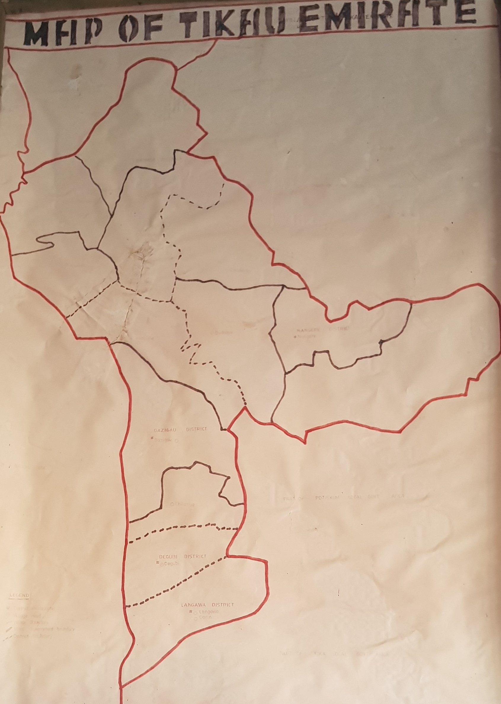"The map shows where the Tikau Emirate is located (Nangere) and the surrounding villages"
The symbol (logo) of the Tikau Emirate
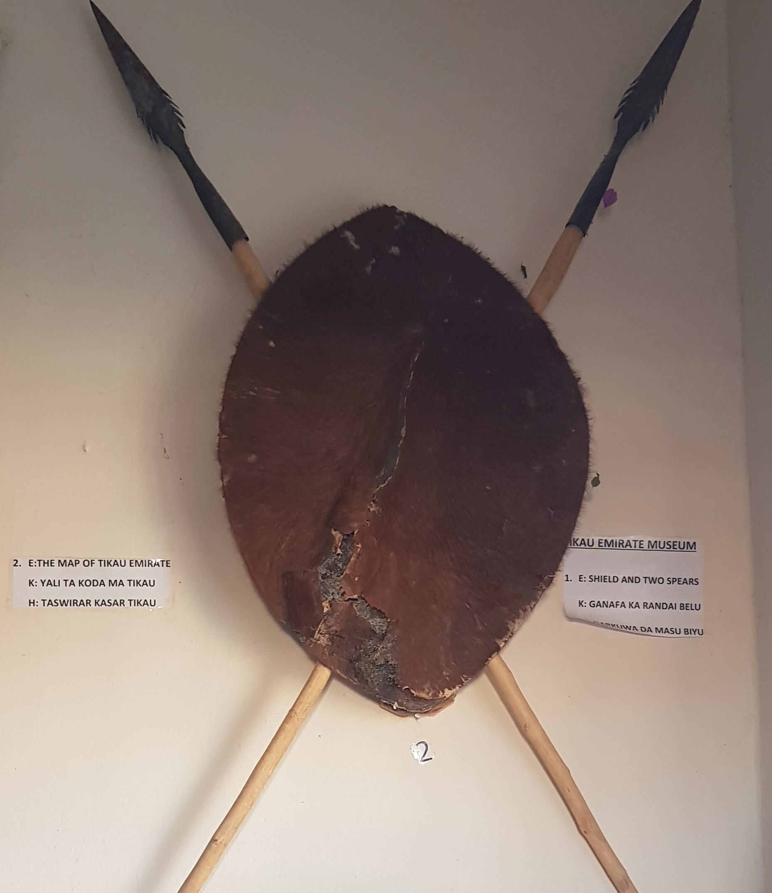"The spear and shield is the symbol (logo) of the Tikau Emirate,its shows how powerful and brave they are"
The Royal Dress
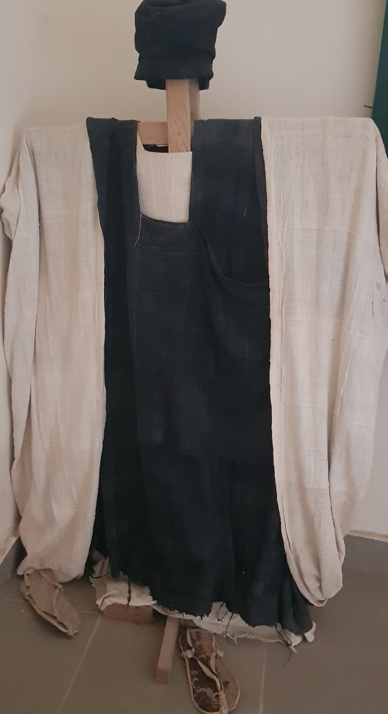"This is the royal dress of the Tikau Emirate during the ancient time"
The Royal Drum
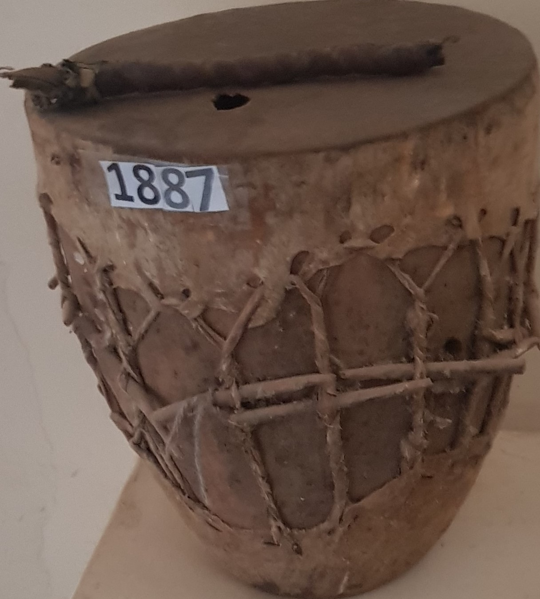"This is the royal drums; The drums are use when a moon is sighted before the commencement of Ramadan (Fasting) period, and also when a king die or when a new one is turbaned.It is also used when the king appointed is stubborn."
The Royal Head Dress

"The head dress is worn by the king and the Emirate council"
The Arrow Container
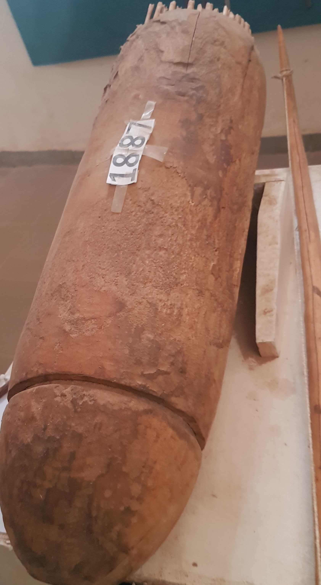"The Arrow containers which are known as “Thliko”, symbolizes the hunting skills of Tikau people, they were brave during wars. The name “DIRAMA” is given to a great hunter and warrior."
The Musical Instrument
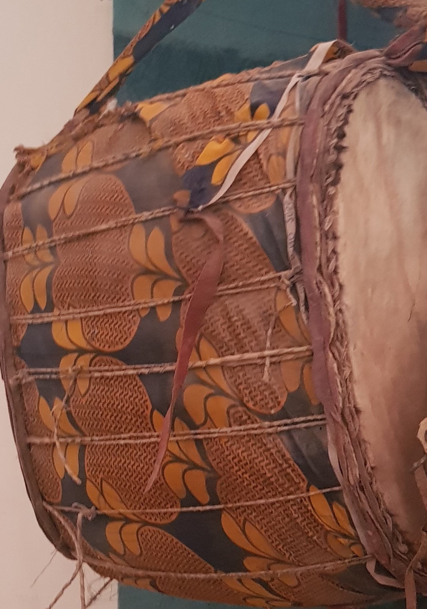This Musical Instrument plays an important role in many events, such as wedding ceremonies, turbaning ceremonies, wrestling contest, e.t.c.
The Warfare and Hunting
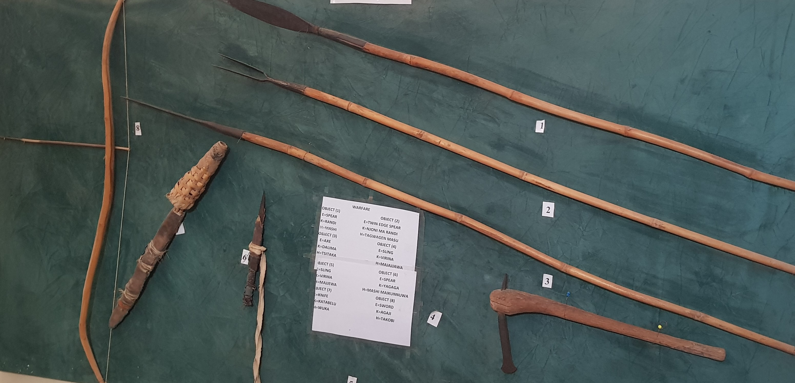Apart from farmimg, the people of Tikau are hunters and gatherers during the ancient times, they engage in hunting big and small animals. The hunting tools are display on the panel.
The Farming Tools
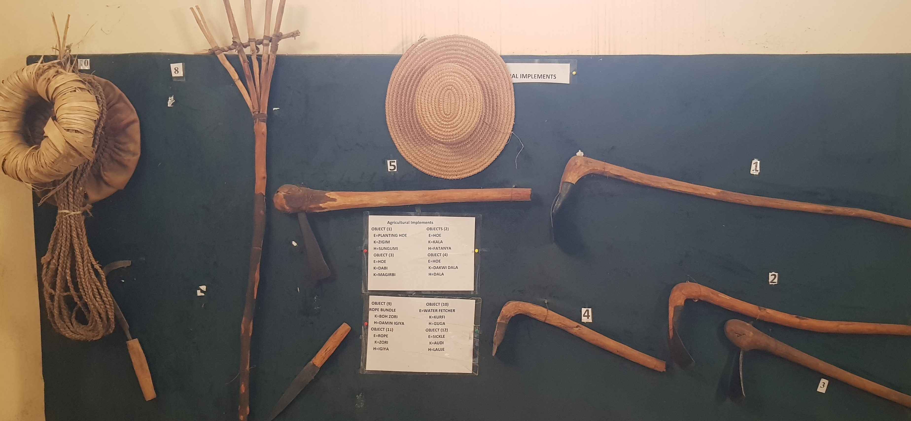Agriculture, which is the main occupation of the people of Tikau Emirate, they engaged in seasonal and irrigational farmimg. The following are displayed on the panel.
The Baby Carrier
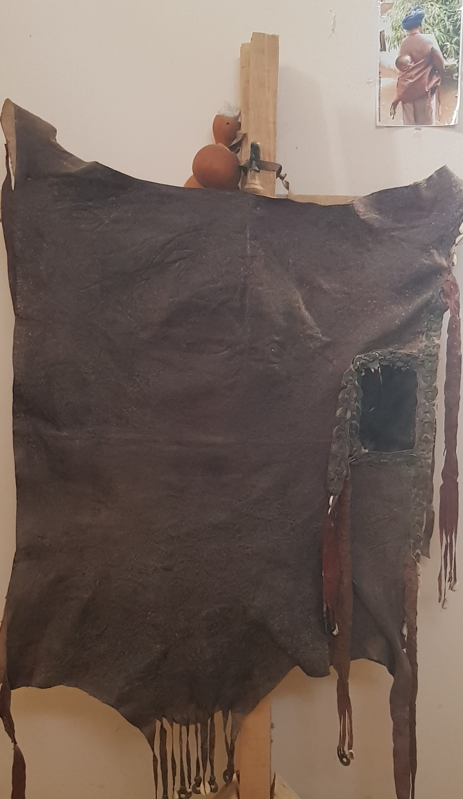Before the invention of wrappers and baby Carriers. The people of Tikau Emirate uses this baby carrier made from animal skin to carry there baby around.
The Soothsayer Materials
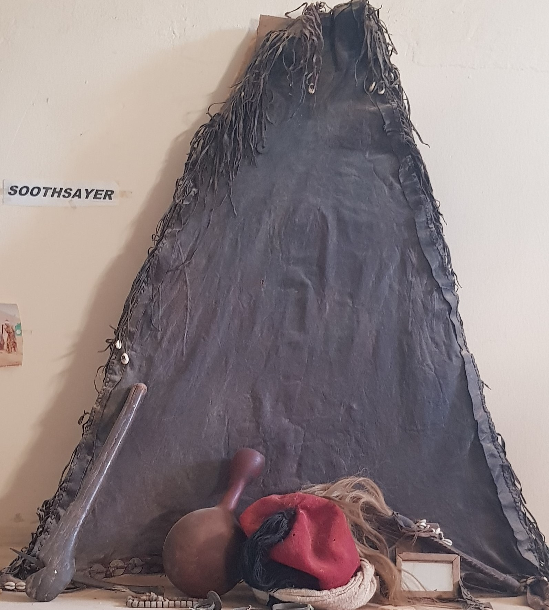Soothsayer believed to be deviators who before the advent of religion were widely patronized. They serve as doctor and foretell future events.
The Blacksmitting Technology

Before the invention of technology and mechanized farming, the people of Tikau practice blacksmitting. they made their own farming and war equipment using this below.
The Barber's Tool
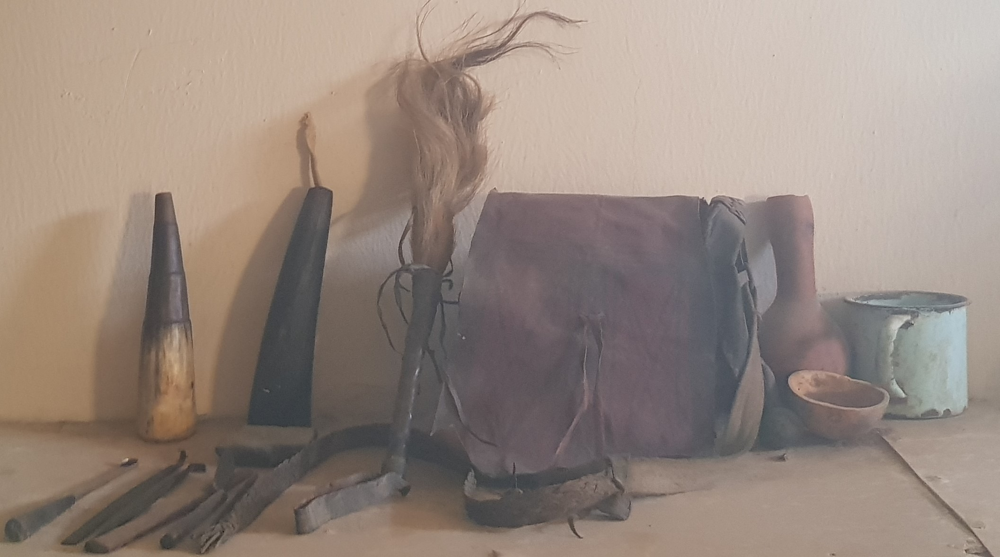This showcase display the equipment use by barbers "DAZU WAZAM" which is called by the Karai-Karai people. The barbers sometime act as a doctor in the society back then to perform circumcision and other minor operation.
The Household Utensils (Calabash and Pottery)
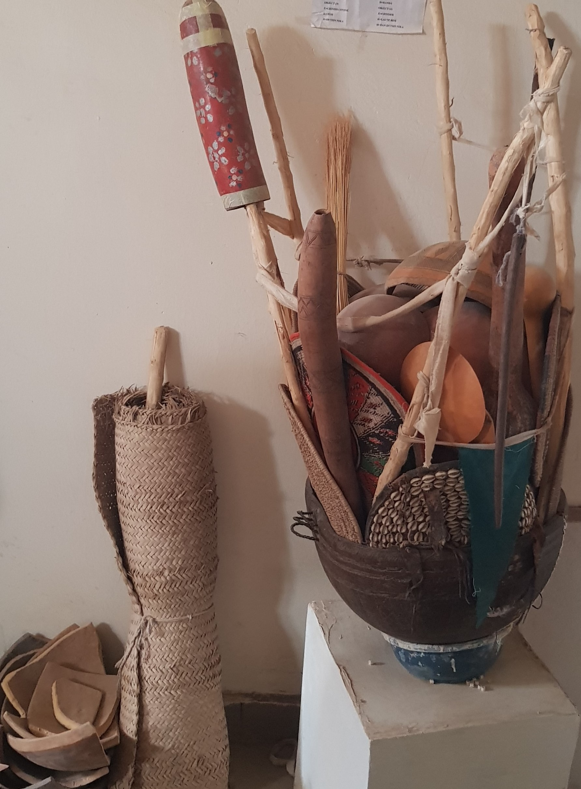 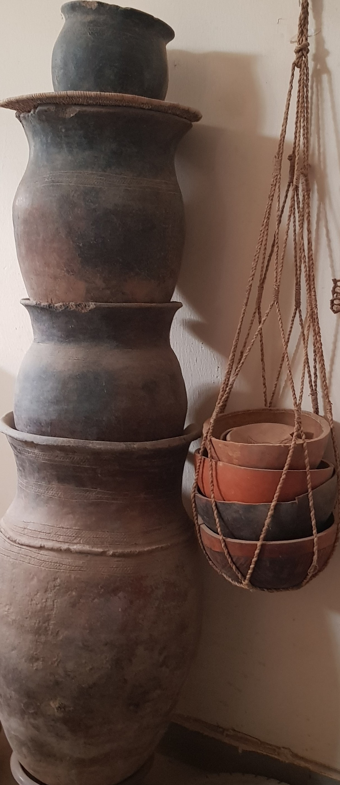This House utensils are for domestic uses and can be found in every house within Tikau Emirate and environs. Mostly the calabashes are used for carrying water and serving food. Other are used for decoration. The pots are use for water storage and cooking, some are use for decorations. servers and boxes where cloth are kept. In some places the pots are use for grain storage.
About us
The museum was created by the late Mai of Tikau Alh.Dr. Muhammadu Abubakar Ibn Grema. He felt the need for the people of Tikau (Nangere) to have a museum that will show case their history, culture and everything else. The mesuem is open to anyone interested in knowing more about the Kare-Kare people and culture.